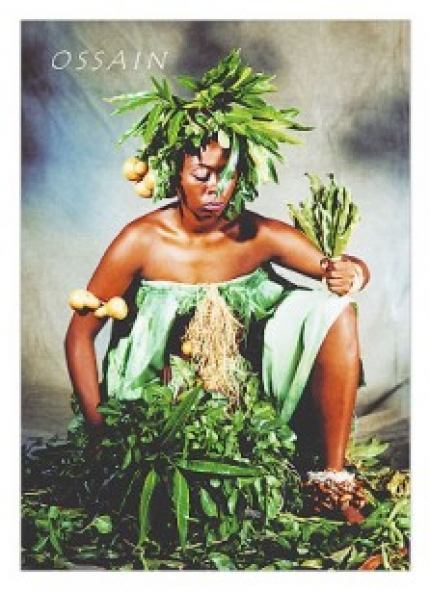

Jonville,Quarta-feira, 27 de Fevereiro de 2013

Ossain - katende
Òsanyin era o nome de um escravo que foi vendido a Orunmila. Um dia ele foi à floresta a lá conheceu Aroni, que sabia tudo sobre as plantas. Aroni, o gnomo de uma perna só, ficou amigo de Òsanyin e ensinou-lhe todo o segredo das ervas. Um dia, Orunmilá, desejoso de fazer uma grande plantação, ordenou a Òsanyin que roçasse o mato de suas terras. Diante de uma planta que curava dores, Òsanyin exclamava: "Esta não pode ser cortada, é as erva as dores". Diante de uma planta que curava hemorragias, dizia: "Esta estanca o sangue, não deve ser cortada". Em frente de uma planta que curava a febre, dizia: "Esta também não, porque refresca o corpo". E assim por diante. Orunmilá, que era um babalao muito procurado por doentes, interessou-se então pelo poder curativo das plantas e ordenou que Òsanyin ficasse junto dele nos momentos de consulta, que o ajudasse a curar os enfermos com o uso das ervas miraculosas. E assim Òsanyin ajudava Orunmilá a receitar a acabou sendo conhecido como o grande médico que é.
Òsanyin, filho de Nanã e irmão de Osumare, Ewá e Obaluayê, era o senhor das folhas, da ciência e das ervas, o Orisá que conhece o segredo da cura e o mistério da vida. Todos os Orisás recorriam a Òsanyin para curar qualquer moléstia, qualquer mal do corpo. Todos dependiam de Òsanyin na luta contra a doença. Todos iam à casa de Òsanyin oferecer seus sacrifícios. Em troca Òsanyin lhes dava preparados mágicos: banhos, chás, infusões, pomadas, abô, beberagens. Curava as dores, as feridas, os sangramentos; as disenterias, os inchaços e fraturas; curava as pestes, febres, órgãos corrompidos; limpava a pele purulenta e o sanguepisado; livrava o corpo de todos os males. Um dia Sango, que era o deus da justiça, julgou que todos os Orisás deveriam compartilhar o poder de Òsanyin, conhecendo o segredo das ervas e o dom da cura. Sango sentenciou que Òsanyin dividisse suas folhas com os outros Orisás. Mas Òsanyin negou-se a dividir suas folhas com os outros Orisás. Sango então ordenou que Iansã soltasse o vento e trouxesse ao seu palácio todas as folhas das matas de Òsanyin para que fossem distribuídas aos Orisás. Iansã fez o que Sango determinara. Gerou um furacão que derrubou as folhas das plantas e as arrastou pelo ar em direção ao palácio de Sango. Òsanyin percebeu o que estava acontecendo e gritou: - "Euê Uassá!". "As folhas funcionam!" Òsanyin ordenou às folhas que voltassem às suas matas e as folhas obedeceram às ordens de Òsanyin. Quase todas as folhas retornaram para Òsanyin. As que já estavam em poder de Sango perderam o Ax é, perderam o poder da cura. O Orisá Rei, que era um Orisá justo, admitiu a vitória de Òsanyin. Entendeu que o poder das folhas devia ser exclusivo de Òsanyin e que assim devia permanecer através dos séculos. Òsanyin, contudo, deu uma folha para cada Orisá, deu uma euê para cada um deles. Cada folha com seus axés e seus efós, que são as cantigas de encantamento, sem as quais as folhas não funcionam. Òsanyin distribuiu as folhas aos Orisás para que eles não mais o invejassem. Eles também podiam realizar proezas com as ervas, mas os segredos mais profundos ele guardou para si. Òsanyin não conta seus segredos para ninguém, Òsanyin nem mesmo fala. Fala por ele seu criado Aroni. Os Orisás ficaram gratos a Òsanyin e sempre o reverenciam quando usam as folhas.
Òrìsà das Folhas e das Matas !!! Òrúnmílá dá a Òsanyìn o nome das plantas. Ifá foi consultado por Òrúnmílá que estava partindo da terra para o céu e que estava indo apanhar todas as folhas. Quando Òrúnmílá chegou ao céu Olódùmaré disse, eis todas as folhas que queria pegar o que fará com elas ? Òrùnmílá respondeu que iria usá-las, disse que, iria usá-las para beneficio dos seres humanos da Terra. Todas as folhas que Òrunmílá estava pegando, Òrúnmílá carregaria para a Terra. Quando chegou à pedra Àgbàsaláààrin ayé lòrun (pedra que se encontra no meio do caminho entre o céu e a terra) Aí Òrúnmílá encontrou Òsanyìn no caminho. Perguntou: Òsanyìn onde vai? Òsanyìn disse; "Vou ao céu, disse ele, vou buscar folhas e remédios". Òrúnmílá disse, muito bem, disse, que já havia ido buscar folhas no céu, disse, para benefício dos seres humanos da terra. Disse, olhe todas essas folhas, Òsanyìn pode apenas arrebatar todas as folhas. Ele poderia fazer remédios (feitiços) com elas porém não conhecia seus nomes. Foi Òrúnmílá quem deu nome a todas as folhas. Assim Òrúnmílá nomeou todas as folhas naquele dia. Ele disse, você Òsanyìn carrega todas as folhas para a terra, disse, volte, iremos para terra juntos. Foi assim que Òrúnmílá entregou todas as folhas para Òsanyìn naquele dia. Foi ele quem ensinou a Òsanyìn o nome das folhas apanhadas.
Desde pequeno Òsanyìn andava metido mata adentro. Conhecia todas as folhas, sabendo empregá-las na cura de doenças e outros males. Um dia Òsanyìn resolveu partir pelo mundo. Por onde andava era aclamado como o grande curandeiro. Certa vez salvou a vida de um rei, que em recompensa deu-lhe muitas riquezas. Òsanyìn não aceitou nada daquilo; disse que aceitaria somente os honorários que seriam pagos a qualquer médico. Tempos depois, a mãe de Òsanyìn adoeceu. Sendo procurado por seus irmãos e para espanto destes, Òsanyìn exigiu o pagamento de sete cauris por seus serviços, pois não poderia trabalhar para quem quer que fosse no mundo, sem receber algo. Mesmo contrariados os irmãos pagaram-lhe os sete cauris e sua mãe foi salva. Òsanyìn curou a mãe e seguiu caminho, pois ele é a folha e tinha que estar livre para o mundo. Òsanyìn havia recebido de Olodumaré o segredo das ervas. Estas eram de sua propriedade e ele não as dava a ninguém, até o dia em que Sangô se queixou à sua mulher, Yansan-Oyá, senhora dos ventos, de que somente Òsanyìn conhecia o segredo de cada uma dessas folhas e que os outros deuses estavam no mundo sem possuir poder sobre nenhuma planta. Oyá levantou as saias e agitou-as, impetuosamente. Um vento violento começou a soprar. Òsanyìn guardava o segredo das ervas numa cabaça pendurada num galho de iroco. Quando viu que o vento havia soltado a cabaça e que esta tinha se quebrado ao bater no chão, ele gritou "Ewê O!! Ewê O!" (Oh! as folhas!! Oh! as folhas!!) As folhas voaram pelo mundo e os Orisás se apoderaram de algumas delas, mas Òsanyìn continuou dono do segredo das suas virtudes e dos cantos e palavras que devem se dizer para que sua força, Axé, apareça.
Òsanyin, filho de Nanã e irmão de Osumare, Ewá e Obaluayê, era o senhor das folhas, da ciência e das ervas, o Orisá que conhece o segredo da cura e o mistério da vida. Todos os Orisás recorriam a Òsanyin para curar qualquer moléstia, qualquer mal do corpo. Todos dependiam de Òsanyin na luta contra a doença. Todos iam à casa de Òsanyin oferecer seus sacrifícios. Em troca Òsanyin lhes dava preparados mágicos: banhos, chás, infusões, pomadas, abô, beberagens. Curava as dores, as feridas, os sangramentos; as disenterias, os inchaços e fraturas; curava as pestes, febres, órgãos corrompidos; limpava a pele purulenta e o sanguepisado; livrava o corpo de todos os males. Um dia Sango, que era o deus da justiça, julgou que todos os Orisás deveriam compartilhar o poder de Òsanyin, conhecendo o segredo das ervas e o dom da cura. Sango sentenciou que Òsanyin dividisse suas folhas com os outros Orisás. Mas Òsanyin negou-se a dividir suas folhas com os outros Orisás. Sango então ordenou que Iansã soltasse o vento e trouxesse ao seu palácio todas as folhas das matas de Òsanyin para que fossem distribuídas aos Orisás. Iansã fez o que Sango determinara. Gerou um furacão que derrubou as folhas das plantas e as arrastou pelo ar em direção ao palácio de Sango. Òsanyin percebeu o que estava acontecendo e gritou: - "Euê Uassá!". "As folhas funcionam!" Òsanyin ordenou às folhas que voltassem às suas matas e as folhas obedeceram às ordens de Òsanyin. Quase todas as folhas retornaram para Òsanyin. As que já estavam em poder de Sango perderam o Ax é, perderam o poder da cura. O Orisá Rei, que era um Orisá justo, admitiu a vitória de Òsanyin. Entendeu que o poder das folhas devia ser exclusivo de Òsanyin e que assim devia permanecer através dos séculos. Òsanyin, contudo, deu uma folha para cada Orisá, deu uma euê para cada um deles. Cada folha com seus axés e seus efós, que são as cantigas de encantamento, sem as quais as folhas não funcionam. Òsanyin distribuiu as folhas aos Orisás para que eles não mais o invejassem. Eles também podiam realizar proezas com as ervas, mas os segredos mais profundos ele guardou para si. Òsanyin não conta seus segredos para ninguém, Òsanyin nem mesmo fala. Fala por ele seu criado Aroni. Os Orisás ficaram gratos a Òsanyin e sempre o reverenciam quando usam as folhas.
Òrìsà das Folhas e das Matas !!! Òrúnmílá dá a Òsanyìn o nome das plantas. Ifá foi consultado por Òrúnmílá que estava partindo da terra para o céu e que estava indo apanhar todas as folhas. Quando Òrúnmílá chegou ao céu Olódùmaré disse, eis todas as folhas que queria pegar o que fará com elas ? Òrùnmílá respondeu que iria usá-las, disse que, iria usá-las para beneficio dos seres humanos da Terra. Todas as folhas que Òrunmílá estava pegando, Òrúnmílá carregaria para a Terra. Quando chegou à pedra Àgbàsaláààrin ayé lòrun (pedra que se encontra no meio do caminho entre o céu e a terra) Aí Òrúnmílá encontrou Òsanyìn no caminho. Perguntou: Òsanyìn onde vai? Òsanyìn disse; "Vou ao céu, disse ele, vou buscar folhas e remédios". Òrúnmílá disse, muito bem, disse, que já havia ido buscar folhas no céu, disse, para benefício dos seres humanos da terra. Disse, olhe todas essas folhas, Òsanyìn pode apenas arrebatar todas as folhas. Ele poderia fazer remédios (feitiços) com elas porém não conhecia seus nomes. Foi Òrúnmílá quem deu nome a todas as folhas. Assim Òrúnmílá nomeou todas as folhas naquele dia. Ele disse, você Òsanyìn carrega todas as folhas para a terra, disse, volte, iremos para terra juntos. Foi assim que Òrúnmílá entregou todas as folhas para Òsanyìn naquele dia. Foi ele quem ensinou a Òsanyìn o nome das folhas apanhadas.
Desde pequeno Òsanyìn andava metido mata adentro. Conhecia todas as folhas, sabendo empregá-las na cura de doenças e outros males. Um dia Òsanyìn resolveu partir pelo mundo. Por onde andava era aclamado como o grande curandeiro. Certa vez salvou a vida de um rei, que em recompensa deu-lhe muitas riquezas. Òsanyìn não aceitou nada daquilo; disse que aceitaria somente os honorários que seriam pagos a qualquer médico. Tempos depois, a mãe de Òsanyìn adoeceu. Sendo procurado por seus irmãos e para espanto destes, Òsanyìn exigiu o pagamento de sete cauris por seus serviços, pois não poderia trabalhar para quem quer que fosse no mundo, sem receber algo. Mesmo contrariados os irmãos pagaram-lhe os sete cauris e sua mãe foi salva. Òsanyìn curou a mãe e seguiu caminho, pois ele é a folha e tinha que estar livre para o mundo. Òsanyìn havia recebido de Olodumaré o segredo das ervas. Estas eram de sua propriedade e ele não as dava a ninguém, até o dia em que Sangô se queixou à sua mulher, Yansan-Oyá, senhora dos ventos, de que somente Òsanyìn conhecia o segredo de cada uma dessas folhas e que os outros deuses estavam no mundo sem possuir poder sobre nenhuma planta. Oyá levantou as saias e agitou-as, impetuosamente. Um vento violento começou a soprar. Òsanyìn guardava o segredo das ervas numa cabaça pendurada num galho de iroco. Quando viu que o vento havia soltado a cabaça e que esta tinha se quebrado ao bater no chão, ele gritou "Ewê O!! Ewê O!" (Oh! as folhas!! Oh! as folhas!!) As folhas voaram pelo mundo e os Orisás se apoderaram de algumas delas, mas Òsanyìn continuou dono do segredo das suas virtudes e dos cantos e palavras que devem se dizer para que sua força, Axé, apareça.
Copyright © 2011- Todos direitos reservados à ACCAIA
Rua Arildo Jose da Silva,99 - Itinga Joinville - SC - Cep: 89245000
::: Suporte 04791261971 :::
Editor on line